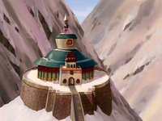
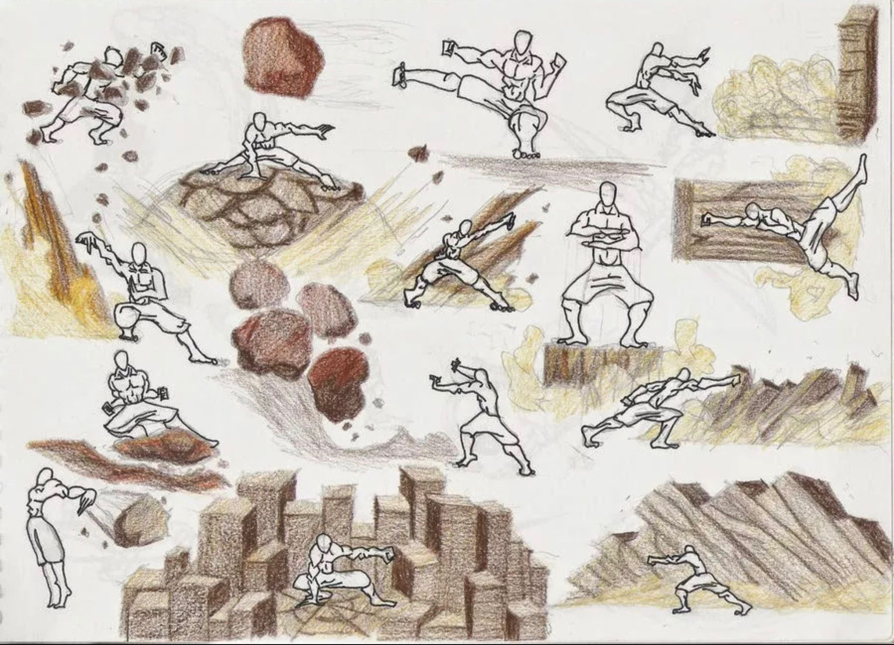
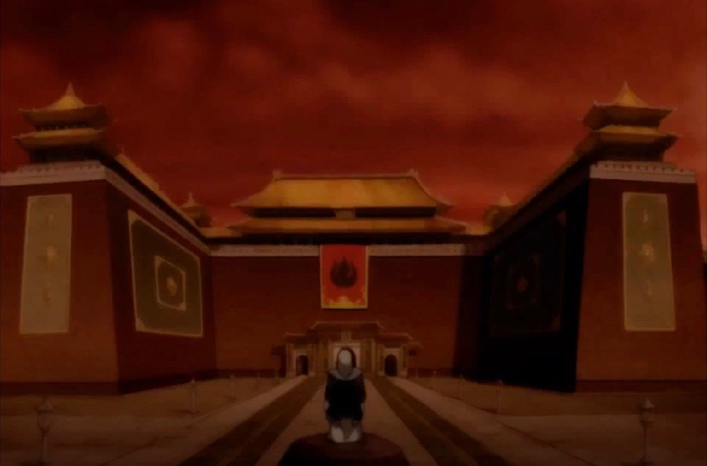

The Earth Kingdom is spread out over an entire continent and several subsidiary islands.
It is the largest and most populated naton in the Avatar world encompasses much of the
eastern hemisphere. The Earth Kingdom is ruled by a monarchy. The Earth Kingdom's people
are proud and strong and follow a philosophy of peaceful coexistence and cooperation with
the other nations. The Kingdom's earthbenders used their skills to defend their cities
against the Fire Nation and for industry. The Earth Kingdom's massive economy depends on
agriculture and limited industry. As a result, it is not as economically powerful as the
Fire Nation which has advanced technology to support its economy.
Culture

Earth Kingdom Avatar Temple
The culture of the Earth Kingdom is so diverse it is hard to define
unlike the other nations from the imposed culture of Ba Sing Se, to
the initially isolated inhabitants of Kyoshi Island. Like the earth,
the people of the Earth Kingdom are essentially immovable in personality
and earthbending.
The Earth Kingdom is based around its elemental color green. Its beautiful
architecture varies by province. Most of the buildings consists of stone,
wood, and plaster which were use in combination with each other or separately
and depends on the resources that were available. The Earth Kingdom's insignia
is used as a symbol of the government and is usually placed on important buildings
and fortresses.
Techniques

Earthbending moves
Earthbending is done through the geokinetic ability to manipulate earth
and rock in all their various states. Earth is considered the element of
substance although the Earth Kingdom's people are diverse, strong, and
enduring. The first earthbenders learned from badgermoles. Generally,
earthbenders have a muscular build, have tough and direct personalities,
and just as other benders their technique reflects their sole personalities.
Earthbending is unique because it has specific balance between defensive and
offensive techniques. Earthbenders use an equilibrium of strength and defense
to overtake their opponents.
Occupation

Iroh in front of the Occupied Earth Kingdom Palace
The Earth Kingdom fended off the invasion of the Fire Nation for most of the
Hundred Year War. The only other threat to the Fire Nation's world dominance
besides the Avatar is the Earth Kingdom. Even with the support of the Water Tribes
the war eventually took a heavy toll on the Earth Kingdom and her people. Then the
Coupe of Ba Sing Se occurred and Princess Azula of the Fire Nation took control of
the Earth Kingdom's capital city. When the next summer came, Ba Sing Se was occupied
by the Fire Nation army. Despite this crushing defeat small bands of rebels continued
to resist the Fire Nation's rule. This resistance lead to Fire Lord's Ozai decision
to burn the Earth Kingdom until nothing was left when Sozin's Comet will come again
after 100 years. The White Lotus (including Iroh) liberated Ba Sing Se during the
last massive battle of the Hundred Year World. This liberation and the defeat of
Fire Lord Ozai effectively freed the remaining Fire Nation-controlled regions of
the Earth Kingdom.